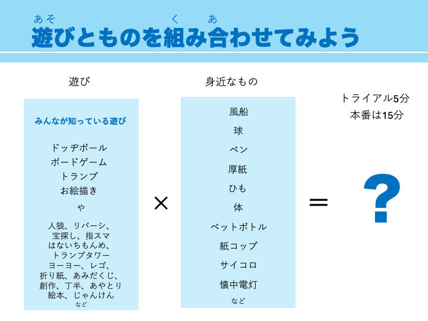

2024SONY×横浜市×道用ゼミ連携プロジェクト
4/19
SONYのMESHを試用
MESHはそれぞれのブロックを無線でアプリと繋げられるIoT機器です。
ブロックには、ボタン、LED、動き、人感、明るさ、温度・湿度、GPIOがあり、デバイス上ではカメラ、マイク、スピーカー、通知、タイマー、スイッチ、カウンターなどと繋げられます。
MESH｜誰でも手軽にプログラミングができる｜つくって楽しい｜学んで楽しい
2グループに分かれ、MESHの試用を行い発表しました。
私たちのグループでは、ボタン、動き、明るさ、人感、温度のブロックにピアノの音階を設定し、かえるの歌を演奏しました。
4/26
生活が楽しくなる「未来の仕掛け」を考える
4人グループでMESHと日用品を使って、生活が楽しくなる「未来の仕掛け」を考え、発表しました。

メガネに動きブロックを付け、メガネをかける動作をするとスピーカーから「がんばろう！」という音声が流れる「勉強を楽しくがんばるための仕掛け」を考えました。
WSテーマのアイデア出し
○○（活動目標）をつくることで、△△（学習目標）を学ぶ
学習目標
ワークショップを通して、小学生たちに持ち帰ってもらいたいこと

活動目標
自分たちの好きなこと・得意なこと

5/17
活動目標・学習目標
2グループに分かれ、前回にそれぞれ課題で考えてきた活動目標と学習目標を発表しました。

グループ内で共有した活動目標・学習目標から、キーワードをまとめました。

グループでまとめた活動目標・学習目標
2グループの活動目標・学習目標を1つに

どちらかの案を多数決で決める予定でしたが、「身体」を使うのか「もの」を使うのかという点以外は似た考えだったため、1つにまとめることにしました。
決まったテーマ
活動目標：日常的な遊びをより楽しむ方法について考え、MESHと○○を使って制作し実演形式で発表することを通じて、
学習目標：可能性を拡げる楽しさを学ぶ/得る
（使うものは後で考えることに）
5/24
アイスブレイク
例：後出しじゃんけんでスクリーンに出てくる手に負ける
ワークショップとは
「講義など一方的な知識伝達のスタイルではなく、参加者が自ら参加・体験して、共同で何か学びあったり、創り出したりする学びと創造のスタイル」中野民夫『ワークショップ』岩波書店，2001年
ワークショップの三大特徴
〇参加
・先生、生徒はいない。自ら主体的に参加する。
〇体験
・言葉や頭で考えるだけでなく、体験を重視。
〇相互作用
・一方向ではなくお互いに学び合う。
ワークショップの実施の流れ
プログラムデザイン→ファシリテーション→振り返り
プログラムデザインの全体像
ワークショップの「ゴール」を決める
↓
「メインワークの内容」を決める
↓
メインワークの「前後」を決める
↓
「タイムスケジュールに落とし込む」
プログラムデザインで大事なことは、
「参加の増幅」
目的：参加者の協働性を活性化すること
参加増幅の仕掛け
〇グループ作り
・参加者の特性を意識して、協働性を高めるグループをつくる。
〇制約
・テーマ、時間、ルールの縛りをつくることで、協働性を高める。
〇即興性
・即興性や身体性による発的なアウトプットが協働性を高める。
ワークショップの教育スタイルは「ガードレール型」
「線路型」「放牧型」「ガードレール型」という3つの教育スタイルがある。
「線路型」：参加者がゴールに向かって、敷かれたレールの上をみんな同じ速度で、レールからはみ出ることがないように指導。
「放牧型」：参加者が好き放題勝手な方向に向かって走り回るイメージ。ゴールが不明確で、役割も明確に与えられていない、放置に近い状態。
「ガードレール型」：ゴールは示されているが、プロセスは参加者に任されていて、ガードレールをはみ出しそうになるとコーチングをされる。参加者はゴールを目指すために試行錯誤する。
「経験学習」とは何か？新入社員が“仕事上の直接経験”で成長する方法／永田正樹
「できる領域→できない領域への足場掛け」
活動目標
・メインワークの内容、つくるもののゴール
制約
・テーマやツールによるガイドライン
難易度
・できることから広げる足場掛け
決めたテーマにある「日常的な遊び」とは？
遊びは幅広い。「遊び」の範囲に制約を加えて参加の増幅を促す必要がある。
遊びを自由に考えると、 人によっては難易度高く、参加者間の共通項がなくなるリスクがある。
1個の遊びに限定すると、自由度がなくつまらなく感じてしまったり、相互の学びがおきづらい。
間をとって、あるテーマによって選ばれた遊びのカタログから選ぶような形であれば、共通項、難易度、相互補完がしやすく、適度な制約により協働性が高まる。
ポイント
・ゼロから考えるのではなく、少し足場掛けをつくる
・子どもがそれだけで遊んでしまう道具は避けよう
・自由に発想、創作できる余地は残す（みんなで同じ物つくるのは避ける）
・MESHは脇役
・目的は学習目標と活動目標
次回のインタビュー準備
横浜市内の小学校の先生方に質問したい内容を付箋で挙げました。
5/31
横浜市内の小学校の先生5名にインタビュー
時間：45分間
目的：WS設計に活かしたい内容・情報をお伺いする
前回挙げた質問の中から特に聞きたいことを絞った
・外で遊ぶ子どもと室内で遊ぶ子どもの割合は？
・休み時間と放課後で子供の遊び内容が変わるか？
・休み時間・放課後それぞれどんな遊びをやっているか？
・子どもたちが流行っていることって何？子どもの間でよく話題に上がることは？
・4～6年生には人気の科目は？4～6年生に不人気の科目は？
・パソコン等のデジタル機器の使用頻度はどのくらいか？情報以外の授業の活用方法は？
回答をどうWS設計に落とし込むか
・外遊び、中遊びそれぞれの内容を質問。
加えて、例えば雨の日の子どもたちの遊びを質問し、子どもが能動的に行う室内遊びを質問。
（WSは会場スペースが限られる。外部衝撃によるリチウム電池の発火危惧によりWS設計の際には室内遊びがメインになるかもしれない。）
・子どもが「面白い」と感じる共通項は何かを検討する。
・デジタル機器が身近にある小学生の解像度を向上させる。我々にはなかった遊びの選択肢（ex.タイピングゲーム、スクラッチ等）のある小学生に、デジタル機器がどの程度浸透・活用されているのか、加えてプログラミング的思考をどの程度WS設計に組み込むか含めて検討する。
ファシリテーター 1人インタビュワー 5人でインタビューを行い、その他メンバーがメモを担当。私はインタビュワーを担当しました。
回答
・外遊びと内遊びは半々に分かれる。
・外遊び：ドッジボール、遊具、鬼ごっこ
・内遊び：オルガン、読書、トランプ、図書室
・ここ10年で変わったことは特にない
・放課後の過ごし方：公園（ボールが蹴れないためドッジボールが多い）、習い事（水泳が多い）、ゲーム（マイクラ、スプラトゥーン、マリオ）、YouTube、TikTok、Netflix
・遊びは流行に影響される（例：アニメ「ハイキュー!!」が流行中はバレーボールで遊ぶ子供が多い）
・タブレットでの学習を行っている。（動画編集、調べ事など）
・タブレットの使用に様々なルールがある。（YouTubeは見てはいけない。友達と遊ぶなら良いが、1人で使ってはいけない。など）
・プログラミングは、興味がある子は学校外でもすすんでやるが、全く興味を示さない子もいる二極化状態。授業で触れるため全くやらない子はいない。
・先生や学校ごとにプログラミング教育に格差がある。
・インスタ係、豆知識係などタブレットを使用する係ができている。
6/7
3グループに分かれて、考えてきたプログラムデザインを発表しあい、フィードバックをもらいました。
遊びの天才になろう！MESHで広がる可能性と創造力」



6/21
前回のグループで、ミニWSを行いました。
2つのグループはある程度の制限の中で工作をする内容、1つのグループはすごろくでMESHの使い方を習得する内容でした。
3グループのうちどれか1つに決定する予定でしたが、話し合いの結果、3つのグループ全てを組み合わせることになりました。

6/28
トライアル
完成したプログラムでトライアルをしました。私は子供役で参加しました。
7/31
リハーサル
ファシリテーターが当日と同じように進行をし、チューター・遊軍の動きの確認をしました。
8/3
ワークショップ本番
私はチューターとして参加しました。午前と午後で親子２組ずつとコミュニケーションを取り、子供たちの補助をしました。